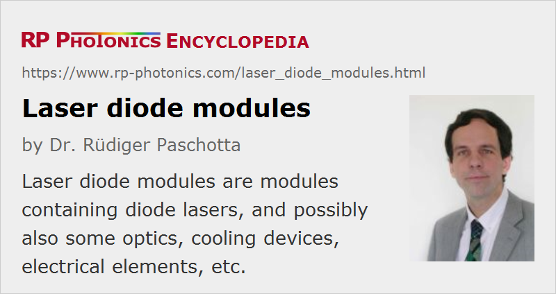

Laser Diode Modules
Definition: modules containing diode lasers, and possibly also some optics, cooling devices, electrical elements, etc.
German: Laserdiodenmodule
Categories: photonic devices, lasers
How to cite the article; suggest additional literature
Author: Dr. Rüdiger Paschotta
Laser diodes are often used in the form of laser diode modules, i.e. packages which contain one or several laser diodes, in most cases combined with some optics and electronics. Such modules are much easier to use than plain laser diodes, as they serve a number of functions:
- Beam shaping: some optics (e.g. consisting of collimating lenses, microoptics, and anamorphic prism pairs) can be used to shape the output beam, e.g. in order to obtain an approximately circular beam with small divergence. Such a collimated beam can be more easily transmitted over some distance and more efficiently coupled to an optical fiber. Other modules for specialized applications offer certain beam shapes, e.g. that of a line, a cross, an open circle, or a square.
- Fiber coupling: some laser diode modules are fiber-coupled, i.e., directly launch the generated light into an optical fiber (“pig-tailed” laser diodes).
- Electrical connections: a laser diode module may contain not only simple connections to the pins of the laser diode, but also additional electronic circuit elements, e.g. for protecting the laser diode against electrostatic discharge (ESD protection), wrong poling and too high operating voltages. It can often be operated directly with a battery or with an unstabilized power supply.
- Cooling arrangements: for high powers, a laser diode module can facilitate the cooling, e.g. by offering a metallic surface which can easily be mounted on a cooler. A thermoelectric cooler (TEC) may also be included, often with a feedback system to stabilize the diode temperature. This leads to a more stable output wavelength and power.
- Power stabilization: the output power may be stabilized with an internal feedback loop with a monitor photodiode (often built into the actual laser diode).
- Pulse generation: the drive current may be pulsed in order to generate output pulses via gain switching. It is possible to obtain nanosecond or even picosecond pulses in that way.
- Wavelength conversion: there are green laser diode modules with an internal frequency doubler. Such a module may contain an amplified single-mode laser diode and a nonlinear waveguide, for example.
Applications of laser diode modules include precise pointing and alignment of optical elements, printing and imaging systems, displays, bar code scanning, optical data storage, optical sensors, pumping of solid-state lasers, open air communication, and medical applications (e.g. photodynamic therapy, ophthalmology).
There are also laser pointers, which can be considered as laser diode modules with integrated batteries, normally used as hand-held devices.
Suppliers
The RP Photonics Buyer's Guide contains 89 suppliers for laser diode modules. Among them:
Questions and Comments from Users
Here you can submit questions and comments. As far as they get accepted by the author, they will appear above this paragraph together with the author’s answer. The author will decide on acceptance based on certain criteria. Essentially, the issue must be of sufficiently broad interest.
Please do not enter personal data here; we would otherwise delete it soon. (See also our privacy declaration.) If you wish to receive personal feedback or consultancy from the author, please contact him e.g. via e-mail.
By submitting the information, you give your consent to the potential publication of your inputs on our website according to our rules. (If you later retract your consent, we will delete those inputs.) As your inputs are first reviewed by the author, they may be published with some delay.
See also: laser diodes, laser pointers, fiber-coupled diode lasers
and other articles in the categories photonic devices, lasers
|  |
If you like this page, please share the link with your friends and colleagues, e.g. via social media:
These sharing buttons are implemented in a privacy-friendly way!